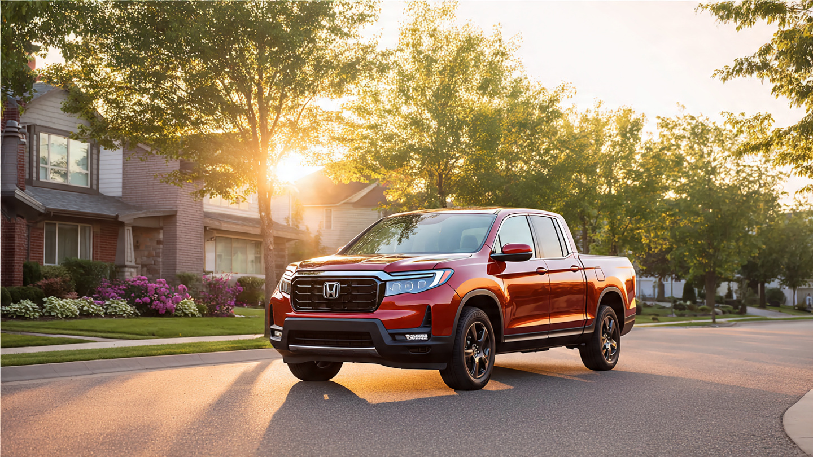

The Truck That Isn’t a Truck Has the Lowest Death Rate of Any Midsize Pickup

Every truck forum on the internet agrees: the Honda Ridgeline is not a real truck. It shares a platform with the Pilot. It has a unibody frame. It cannot crawl Rubicon. And per FARS data from 2014 to 2023, it has a fatal crash rate of 0.24 deaths per 100 million vehicle miles traveled.[1] That is the lowest of any midsize pickup sold in America. By a wide margin.
Here is every midsize pickup in the FARS dataset, ranked by fatal crash rate: Ridgeline (0.24), Chevy Colorado (0.28), GMC Canyon (0.59), Toyota Tacoma (0.80), Nissan Frontier (1.45), Dodge Dakota (2.62), Ford Ranger (2.91).[1] That is a 12x spread. Same roads. Same speed limits. Same drunk drivers weaving through traffic at 2 a.m.
So what separates the Ridgeline from the Ranger? Not the drivers. Impairment rates across all seven trucks cluster between 19% and 21%.[1] Behavior is a wash.
It is the frame. Body-on-frame construction bolts a cabin onto a steel ladder. Great for towing a boat. Catastrophic for absorbing a 40-mph head-on. That ladder does not crumple. It transmits. Unibody construction does the opposite: the body is the structure, and Honda engineers it to fold in exactly the places that keep you alive.[3]
Honda built the Ridgeline on the Pilot platform, which itself descends from the CR-V architecture.[4] That CR-V runs a 0.53 death rate. The Pilot is similarly low. Honda did not build a truck and then add safety. They built a safe car and added a bed.
Lethality ratios reinforce the pattern. When a Ridgeline is in a fatal crash, 48.3% of those crashes produce a death. For the Ranger, it is 69.0%.[1] Crash-for-crash, the Ranger converts collisions to coffins at nearly 1.5 times the rate.
Counterargument, stated honestly: 84 deaths across a decade is a thin sample. Wide confidence intervals. The Tacoma has 2,274 deaths backing up its 0.80 rate, giving it far more statistical stability. Fleet age matters too: Ranger figures include trucks sold from 1983 to 2011, decades before modern crash standards. The Colorado, a modern body-on-frame truck (2015+), runs 0.28, nearly matching the Ridgeline. The gap might be about old-vs-new, not unibody-vs-frame.[2]
But even granting all of that, the modern Tacoma still sits at 0.80. Three times the Ridgeline. Three times the Colorado. This is a 2016-and-later vehicle with IIHS Good ratings across most categories,[5] selling to a nearly identical demographic. Platform architecture matters. Crumple zones matter. And the truck that gets laughed off every forum for being a glorified minivan with a bed is the one you are statistically most likely to walk away from.
Limitations: FARS captures only fatal crashes, a fraction of the roughly 6.7 million annual U.S. crashes. A low fatality rate does not guarantee a low injury rate. VMT estimates are derived from NHTS household survey data, not odometer readings, introducing approximately ±15% uncertainty for low-volume models like the Ridgeline.[2] Ridgeline buyers may skew older and more suburban than Tacoma buyers, which could partially explain the gap independent of vehicle design.